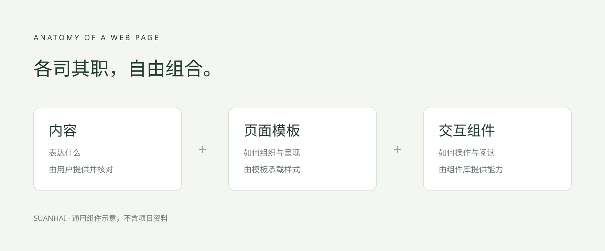

BUILT FOR YOUR PRESENTATION
阅读，
从容一点。
内容留在舞台中央。
翻页、显示与输出，触手可及。
用底部控制栏体验全部交互01 — 03
A CLOSER LOOK
细节，值得看清。
点击图示，体验适应窗口、原始尺寸与缩放。


查看完整原图 ↗关闭后，回到刚才的位置02 — 03
SMALL DETAILS, CLEAR FEEDBACK
每一步，
都有回应。
01
显示与比例
切换阅读宽度与画布比例，正文自然增长。
02
全屏与输出
进入专注视图，或通过打印对话框保存全部页面。
03
离线公式
a² + b² = c²
← → 翻页 · Home / End 首尾页03 — 03